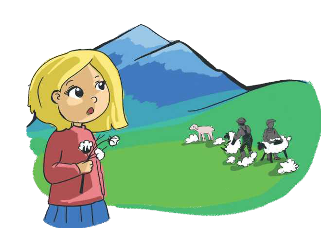

TEMATIKA 1: MATERIALET DHE PËRPUNIMI I TYRE
3.DITA DHE LULJA E VEÇANTË

Rrugës për në punëtorinë e xhaxhi Burimit, Dita kaloi nëpër një lëndinë, që kishte disa lule mjaft të veçanta. Ajo u befasua prej tyre. Këputi njërën dhe po e shihte me habi. Ishte një lule, që në vend të petaleve kishte push të bardhë e të butë. Pak më tej pa disa njerëz që po qethnin disa dele. Leshi i tyre ngjasonte me “petalet” e lules që kishte dorë.